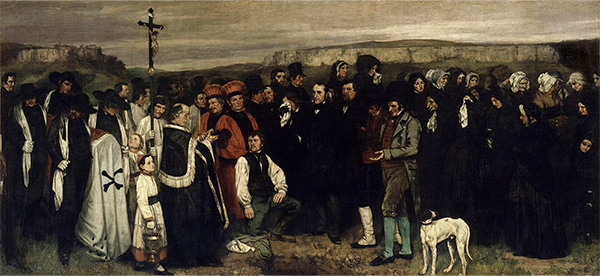
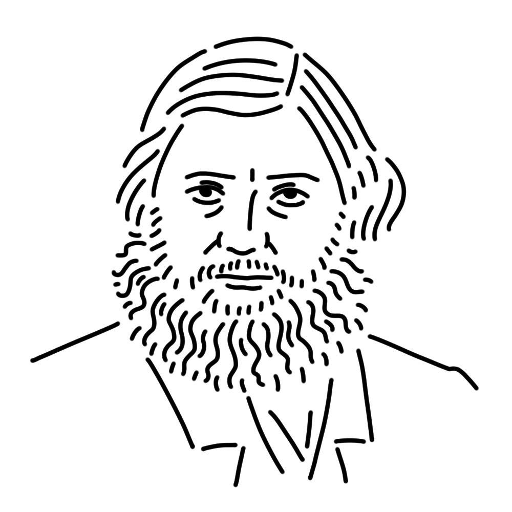

想像の題材を誇張して描くことが主流だった時代に写実主義（リアリズム）を引っさげて画壇に殴り込んだ西洋美術きっての問題児。大変攻撃的・尊大な性格で、生み出したものも、破壊したものも、数しれない。
フランス王国
"オルナンの埋葬"
"画家のアトリエ"
"世界の起源" etc.

クールベの故郷であるフランスの小さな町、オルナンで行われた親戚の葬式の様子を描いたもの。無名の人物の葬式という日常の風景をまるで重大な出来事のように描いたこの作品は、批評家からバッシングを受けた。当時の常識では、このような大きなキャンバスは宗教画や歴史画にしか許されていなかったのである。
制作年
1849 - 1850年
技法・材質
油彩、カンヴァス
寸法
315 cm x 668 cm
所蔵
オルセー美術館（フランス）

19世紀フランスでレアリスム（写実主義）を打ち立てた画家。「私は天使を見たことがないから描かない」という言葉の通り、神話や理想美を拒み、現実の人々や労働者をそのまま描いたが、その姿勢は当時の美術界への挑戦と受け取られ、激しい批判を浴びた。万博の展示で落選したことに反発し自ら展示場を設けた展示は、美術史上初の個展とも言われている。若い頃の肖像画を見るとかなりの美男子だが、年を重ねるにつれだいぶ太ってしまったようだ。
1819年6月10日
December 31, 1877
1877年12月31日(58歳没)